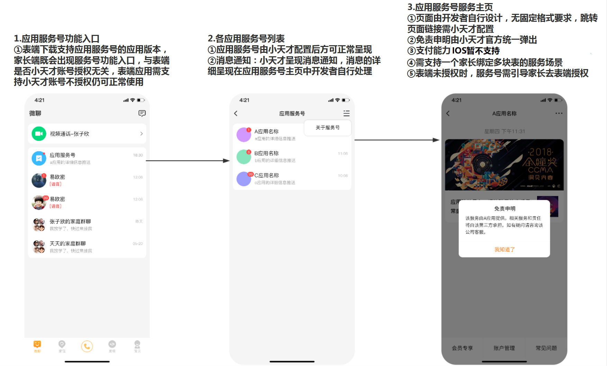
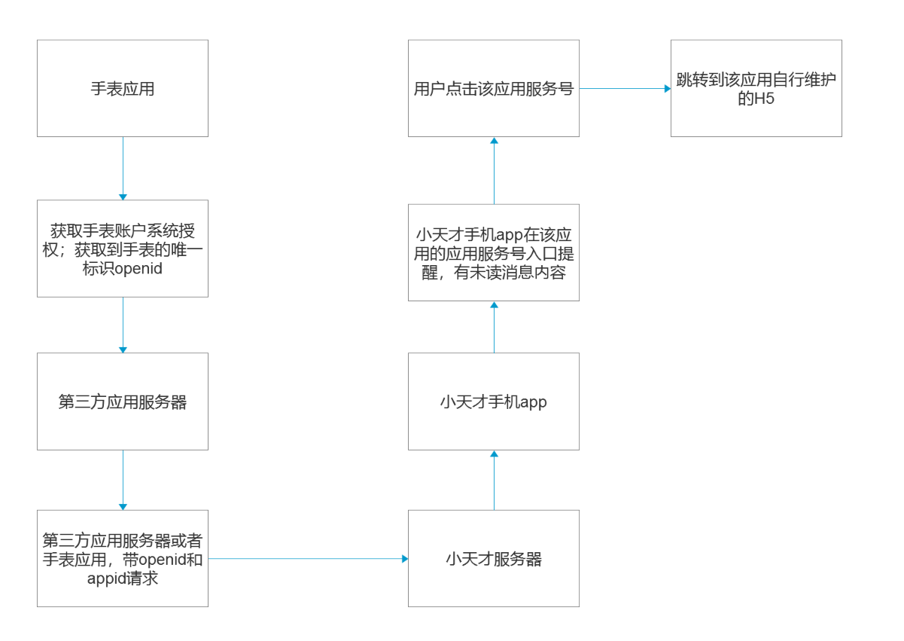
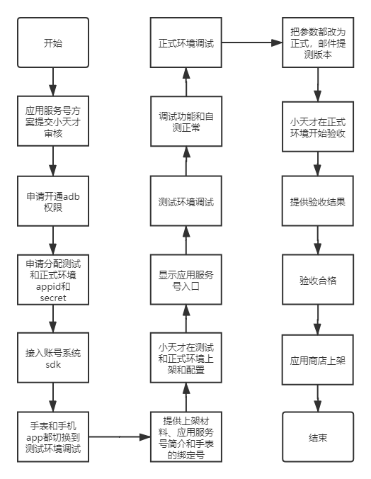

# 应用服务号
# 1. 应用服务号是什么？
# 1.1 概述
应用服务号是表端应用在小天才家长 APP 端的服务延伸，以小天才家长 APP 为入口，为家长提供应用使用数据报告、功能管理、服务购买、与孩子互动等服务，更好的向家长传递服务价值并提升转化。
# 1.2 功能示意图

# 1.3 应用服务号主逻辑

# 1.4 应用服务号对接流程

# 3. 开发对接指引
# 3.1 开发依赖
# 3.1.1 手表版本需支持小天才账号授权
手表固件版本、应用商店“基础应用”版本需升级至最新版本，目前所有的 4G 手表已全部支持应用服务号；注意 Z2、Z3 请升级到 3.0.1 及以上，Z5q 升级到 3.5.0 及以上，Z5a 升级到 2.0.0 及以上，Z6 升级到 1.3.5 及以上。
# 3.1.2 切换环境
# 3.1.3 第三方应用版本需支持小天才账号授权：小天才账号系统对接流程详见账号系统对接文档
# 3.1.4 小天才家长 APP 版本需支持应用服务号功能
# 应用服务号对接需提供以下信息至小天才进行配置
支持应用服务号的最低应用版本（小天才 app 应用服务号入口显示的条件：app 账号绑定的手表安装了支持应用服务号的最低应用版本以上的对应第三方应用），小天才上架应用商店，开发者下载该应用版本后可正常调试。
应用服务号介绍文案（建议50 字以内）。
应用服务号界面跳转 url（点击应用服务号图标后的跳转界面，需为 https 格式），服务内容及界面由第开发者自行设计（H5 调试建议使用 Vcosnole，下载地址https://github.com/Tencent/vConsole）。
注意：调试时需保持手表、APP 环境一致，为避免驳杂数据，请先在模块环境调试。
# 3.2 XtcJSBridge.js 文档
XtcJSBridge 在小天才电话手表 APP 上封装的面向 H5 应用开发者的一套 API，其目标是统一 XtcJSBridge 接口命名、入参、出参格式，处理 XtcJSBridge 的历史性兼性问题，降低在 Webview 容器内开发成本和沟通成本。
# 3.2.1 APP 版本要求
要求小天才电话手表 APP 版本不低于 7.1.8 版本。
# 3.2.2 使用流程与示例
- 第一步：引入 xtcJSBridge.JS 文件：
// 测试版本：
<script src="https://static-module.okii.com/watch/api/xtcJSBridge.js"></script>
//正式版本：
<script src="https://static.watch.okii.com/watch/api/xtcJSBridge.js"></script>
- 第二步： 调用示例
xtc.method({
complete: function(res) {
// 回调后执行 （调用成功、失败都会执行）
console.log(res);
},
success: function(data) {
// 成功回调
console.log(data);
},
fail: function(err, code) {
// 失败回调
console.log(err);
},
});
# 3.2.3 接口约定
| 名称 | 类型 | 必填 | 描述 |
|---|---|---|---|
| success | Function | 否 | 接口调用成功的回调函数 |
| fail | Function | 否 | 接口调用失败的回调函数 |
| complete | Function | 否 | 接口调用结束的回调函数（调用成功、失败都会执行） |
| code | 描述 |
|---|---|
| 1 | 成功 |
| 4 | 失败 |
| 7 | 未知错误,参数非法,参数格式错误 |
注意事项
特别提醒的是由于 bridge 的机制问题，避免过早的调用 XtcJSBridge 上的方法，如果需要尽快调用方法获取数据，且发现存在获取不到的情况，请延时 150 毫秒左右去获取。另外如果发现其他问题，请及时与我们开发人员沟通解决。
# 3.2.4 获取 OpenId
- xtc.getOpenId(appId, CALLBACK)
- OPTION 参数说明 :
| 参数名 | 必须 | 类型 | 说明 |
|---|---|---|---|
| appId | 是 | String | 第三方应用 ID |
- CALLBACK 参数说明 :
| 参数名 | 必须 | 类型 | 说明 |
|---|---|---|---|
| openId | 是 | Array[String] | 该账号下的手表的 openId 列表 |
- 示例 ：
xtc.getOpenId({
// 调试appId值为39a476cd5cbac50b1ba2435578
appId: '39a476cd5cbac50b1ba2435578',
complete: function(res) {
console.log(res); // 调用成功、失败都会执行
},
success: function(data) {
console.log(data); // 调用成功后执行
// {"openId":["xxxxxxxxxxx","xxxxxxxxxxx"]}
},
fail: function(data, code) {
console.log(data); // 调用失败后执行
},
});
# 3.2.5 获取 APP 基本信息
- xtc.getAppData(CALLBACK)
- OPTION 参数说明 : 无
- CALLBACK 参数说明 :
| 参数名 | 必须 | 类型 | 说明 |
|---|---|---|---|
| version | 是 | String | App 版本号 |
| brand | 是 | String | 手机品牌 |
| model | 是 | String | 手机品牌型号 |
- 示例 ：
xtc.getAppData({
complete: function(res) {
console.log(res); // 调用成功、失败都会执行
},
success: function(data) {
console.log(data); // 调用成功后执行
// {"brand":"OPPO","version":"6.1.0","model":"OPPO R9m"}
},
fail: function(data, code) {
console.log(data); // 调用失败后执行
},
});
# 3.2.6 获取网络信息
- xtc.getNetWork(CALLBACK)
- OPTION 参数说明 : 无
- CALLBACK 参数说明 :
| 参数名 | 必须 | 类型 | 说明 |
|---|---|---|---|
| state | 是 | String | "WiFi"、"4G"、"3G"、"None" |
- 示例 ：
xtc.getNetWork({
complete: function(res) {
console.log(res); // 调用成功、失败都会执行
},
success: function(data) {
console.log(data); // // 调用成功后执行
// {"state":"WiFi"}
},
fail: function(data, code) {
console.log(data); // 调用失败后执行
},
});
# 3.2.7 打开界面
- xtc.openURL()
- OPTION 参数说明 : 无
- CALLBACK 参数说明 :
| 参数名 | 必须 | 类型 | 说明 |
|---|---|---|---|
| url | 是 | String | 打开的 url 地址 |
| type | 是 | Number | 2：APP 外部打开界面 |
- 示例 ：
// 示例：拨打电话88888888
xtc.openURL('tel:88888888', 2);
// 示例：外部打开小天才官方
xtc.openURL('https://bbs.okii.com/m', 2);
# 3.2.8 toast 提示
- xtc.toast(msg)
- OPTION 参数说明 :
| 参数名 | 必须 | 类型 | 说明 |
|---|---|---|---|
| msg | 是 | String | 提示语 |
- 示例 ：
xtc.toast('你好');
# 3.2.9 页面返回逻辑
注：返回键默认行为
安卓：
- 左上角返回键：点击返回到应用列表页
- 物理返回键：点击返回到上一页面
IOS：
- 左上角返回键：点击返回到应用列表页
- 左下方虚拟返回键：点击返回到上一页面
左上角返回键行为不可变，只可定制下方返回键行为
# 3.2.10 设置返回键控制权
注：获取返回键控制权后，返回键失去默认行为（点击返回键不会退出当前页面），需要配合返回键点击回调事件使用
- xtc.setbackWebControl(control)
- OPTION 参数说明 :
| 参数名 | 必须 | 类型 | 说明 |
|---|---|---|---|
| control | 是 | boolean | 是否获取控制 true 则获取控制权，false 则取消 |
- 示例 ：
xtc.setbackWebControl(true); // 获取返回键控制权，此时点击返回键无法返回
xtc.setbackWebControl(false); // 归还返回键控制权，此时点击返回键正常返回
# 3.2.11 设置返回键点击回调
注：需要先获取返回键控制权，获取返回键控制权后，用户点击返回键会触发回调事件
xtc.registerNavBack()
示例 ：
xtc.registerNavBack(() => {
xtc.toast('你点击了左下方返回键');
// ...自定义逻辑
xtc.setbackWebControl(false); // 归还返回键控制权
});
# 3.2.12 获取返回键控制权并设置回调
需要同时调用setbackWebControl和registerNavBack
- 示例 ：
xtc.setbackWebControl(true);
xtc.registerNavBack(() => {
xtc.toast('你点击了左下方返回键');
// ...自定义逻辑
xtc.setbackWebControl(false); // 归还返回键控制权
});
# 3.3 消息推送服务
# 3.3.1 概述
- 调用方：第三方服务器
- 作用：第三方推送信息到 APP 和手表设备
- 测试环境域名：https://api-module.okii.com/openpush-service/
- 正式环境域名: https://api.watch.okii.com/openpush-service/
# 3.3.2 推送消息到家庭圈(绑定手表的家长 app)接口说明
根据手表用户的 openId 推送第三方应用的相关内容到家长端应用服务号
- 请求消息
- 协议类型：HTTPS（POST 请求）
- 数据格式：json
- 服务 URL： https://api-module.okii.com/openpush-service/push/familyPush
- 消息方向：第三方应用->开放服务
- 请求参数
| 参数 | 参数名称 | 类型 | 必填 | 参数说明 |
|---|---|---|---|---|
| accessToken | 授权令牌 | String | 是 | 授权令牌 |
| openId | 用户 openId | String | 是 | 用户 openId |
| appId | 第三方应用 id | int | 是 | 第三方应用 id |
| pushContent | 推送内容 | Object | 是 | 推送内容 |
PushContent 字段：
| 参数 | 参数名称 | 类型 | 必填 | 参数说明 |
|---|---|---|---|---|
| title（暂无长度限制） | 推送标题 | String | 是 | 推送标题 |
| appId | 第三方应用 id | int | 是 | 第三方应用 id |
| openId | 用户 openId | String | 是 | 用户 openId |
| appName | 应用名称 | String | 是 | 应用名称(需和入驻时填入的应用名称保持一致) |
- 示例
{
"openId": "312726fdef91411aadb51711f14de8ba",
"accessToken": "fa8d96643cda4aa0ae222f726238c54b",
"appId": 100006,
"pushContent": {
"title": "一封来自网易云的信",
"appId": 100006,
"openId": "312726fdef91411aadb51711f14de8ba",
"appName": "只只学园"
}
}
- 响应消息
{
"code": "000001",
"desc": "SUCCESS"
}
- 返回状态
| 状态码 | 提示消息 |
|---|---|
| "12001" | 参数无效 |
| "12008" | accessToken 无效或过期 |
| "12010" | 无效 openId |
| "12009" | 此范围未授权 |
| "12012" | 无效用户信息 |
# 4. 应用服务号常见问题
- openId、appId、unionId 区别？
appId:应用身份标识；openId 是用户和应用的唯一 Id，应用下，用户的 openId 是唯一的；unionId 是用户和开发者的唯一 Id，在一个开发者下，用户的 unionId 是唯一的。
- 应用服务号入口怎么显示的？
提供上架材料和应用服务号介绍后，小天才在后台配置好；如果是在应用商店直接下载安装的，小天才 app 会自动显示该应用的应用服务号入口；如果第一次接入应用服务号的，本地安装好应用后，需要联网重启下手表。
- 应用服务号兼容性如何？
目前机型，最新的版本都是支持账户系统和应用服务号功能，在获取授权之前，需要隐藏账户系统相关的功能。如果不支持账户系统的版本，该应用无法使用的话，可以通知小天才，可以只在支持账户系统的手表版本上，上架该应用。
- 手表如何切换到正式环境？
按原来切换测试环境的方法，可以切换到正式环境。